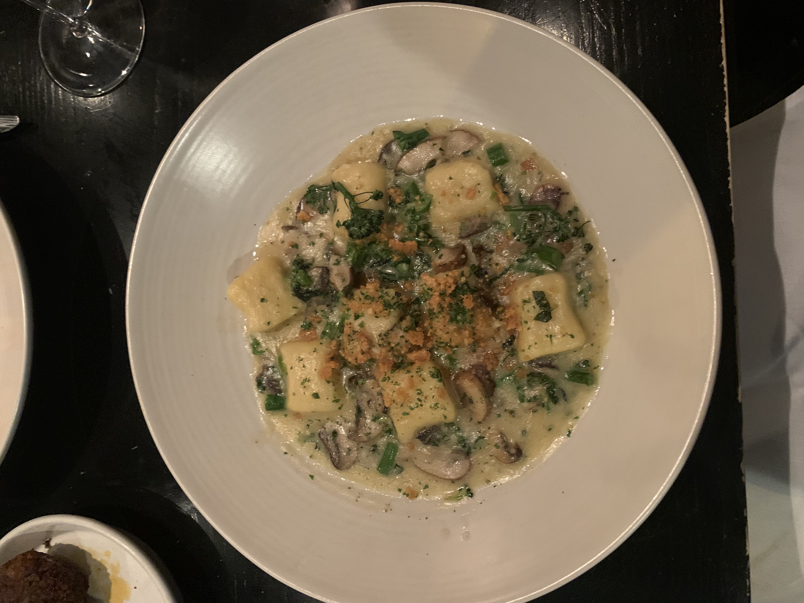

- Cento
-
Cento is an itallian restaurant located in downtown Madison near the capital. My favorite dishes from Cento are the spaghetti and gnocchi, pictured here. Cento has a really extensive menu, and it was difficult to choose just one dish to eat! The spaghetti was delicious and you could definitely tell the noodles and sauce were both home-made. The gnocchi was also super tasty with good flavor. I am excited to go back and try the rest of the menu! 
- Paul's Pelmeni
-
Paul's Pelmeni serves russian dumplings downtown Madison closer to campus near State Street. My favorite version of the dumplings are the full potato with what they call the works. The works includes all the toppings Paul's has, including butter, curry powder, and even sour cream. You can also get the dumplings with beef or half with beef and potato. I am vegetarian, so I have not tried the beef, but I have heard they are just as amazing. - Swagat
-
Another of my favorite restaurants in the Madison area is Swagat, which serves Indian Cuisine. Swagat is a bit further from downtown and is located on the west side of Madison near Middleton. They also have a second location near Sun Prarie. My favorite things to order from Swagat are the Paneer Tikka Massala, which was super creamy and delicious. I also really enjoyed their Garlic Naan and Mango Lassi. I am excited to go back to Swagat and try more of their extensive menu.